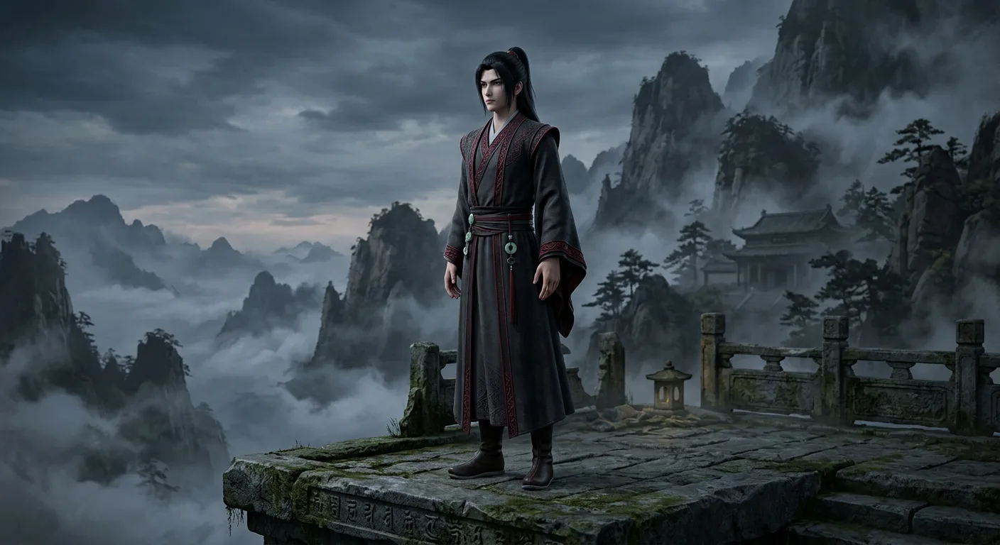

Character · Wiki
Fang Yuan
Gu Yue Fang Yuan · Old Demon Fang · 方源
Protagonist · Demonic Cultivator · Gu Yue Clan
The story's protagonist, a five-hundred-year-old demonic cultivator killed at the height of his power, who wakes in the body of his fifteen-year-old self with every memory of the life he intends to live differently.

Standing in the world
Chapter 1 · aptitude grade C
A mark, not a portrait — the figure carries only what the text states, and what it does not is not drawn. See them standing in the world →
Cultivation, as statedevery figure cites the line it came from
In the textevery mark is a paragraph; click one to read the line
Written into 75 of 346 published paragraphs (22%) — first at chapter 1, ¶1, most recently at chapter 5, ¶51.
Who he is
Fang Yuan is a cultivator of the Demonic Path, and the oldest soul in a fifteen-year-old body. He spent five hundred years climbing from a villager of the Gu Yue Clan to one of the strongest beings in the world, and the novel opens at the moment of his death, and of his second beginning.
He is not a hero who fell. He was never one. The novel is candid about that from its first page: he lies, he kills, he uses people, and he does it without apology, because in a world where strength is the only law, apology is a luxury that costs your life.
How the world knew him
To the righteous sects that cornered him, he was Old Demon Fang, a name they shouted at his death and one he had thoroughly earned.
“Old Demon Fang, harbor no delusions of defiance!
Chapter 1, paragraph 2
None of them dared make a move; every soul among them trembled before the final, dying wrath of Old Demon Fang.
Chapter 1, paragraph 10
In the translation
“In the end, I failed after all,” Fang Yuan sighed in his heart. A trace of wistfulness stirred, yet not the faintest whisper of regret.
Chapter 1, paragraph 19
Gazing upon the green mountains and the setting sun, Fang Yuan let slip a soft, low chuckle.
Chapter 1, paragraph 14
“If this newly refined Spring Autumn Cicada works, I will still be a demon in my next life!”
Chapter 1, paragraph 22
What he wants
Not revenge, and not power for its own sake. Fang Yuan wants eternal life, and he is entirely clear-eyed about the fact that everything else must be spent to get it.
He is the most consistent person in the novel. Where others are moved by loyalty, love, pride or fear, Fang Yuan is moved by a single question: does this bring me closer? People who mistake that for ordinary villainy tend to die surprised.
What chapter 1 shows
We meet him already old in spirit, calm where a boy would panic and calculating where a boy would boast. His younger self, the true Gu Yue Fang Yuan with a mediocre Aptitude, is the body he inherits, and he wears it like clothes that fit poorly.
He begins again with nothing but his memory. In his second life he sets his first goal deliberately low, because he knows exactly what he is working with.
Only if I reach the cultivation base of a Rank 3 Gu Master will I have the baseline ability to protect myself and traverse the mountains and rivers of this world.
Chapter 2, paragraph 21
Names and forms
| Name | Meaning |
|---|---|
| Fang Yuan | his given name; the one used throughout |
| Gu Yue Fang Yuan | his clan style, used by the villagers of Qing Mao Mountain |
| Old Demon Fang | the name the Righteous Path gave him |
| 方源 | the original Chinese name |